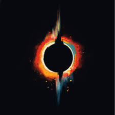
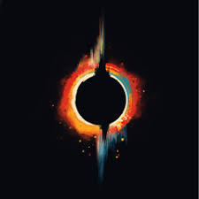
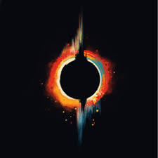

Galeria de Imagenes
.png) 

Conoce Virgin Magnetic Material, un innovador proyecto de remixes encabezado por el talentoso Shai Vardi, un músico y artista proveniente de la vibrante Tel Aviv. Virgin Magnetic Material incursiona extensamente en el vasto ámbito de la música electrónica, conocido por su enfoque único en el sonido y la producción. Este proyecto se destaca en la industria gracias a su estilo vanguardista, su estimulante cultura de remixes y una nueva visión de la música que trasciende las normas. El trabajo de Vardi encarna una dedicación a la exploración sonora, que resuena profundamente entre los entusiastas y coleccionistas de vinilos que aprecian el arte detrás de cada pista cuidadosamente construida. Con claras conexiones con la cultura del vinilo, Virgin Magnetic Material invita a los oyentes a explorar un viaje donde el sonido y la tradición se entrelazan, ¡una experiencia que realmente cautiva!
Nacido y criado en la ciudad artística de Tel Aviv, el recorrido musical de Virgin Magnetic Material está profundamente arraigado en una comunidad que respira creatividad. Shai Vardi, que proviene de una familia que tenía en alta estima la música, tuvo una infancia llena de melodías y sonidos armoniosos. La riqueza cultural de la región, entrelazada con diversas influencias musicales de diversos orígenes, no solo moldeó el arte de Vardi, sino que también desarrolló una profunda conexión con la música. Este entorno vibrante fomentó su pasión por experimentar con el sonido desde una edad temprana, inculcando el deseo de explorar el mundo de los discos de vinilo. Cuando era un artista joven, la experiencia de escuchar y coleccionar álbumes inspiraría a Vardi a adoptar el vinilo como un medio por excelencia para compartir música y conectarse con los fanáticos.
La paleta sonora de Virgin Magnetic Material se cultiva a partir de una mezcla ecléctica de influencias musicales. Shai Vardi, que se inspira en artistas electrónicos pioneros y en la cultura icónica del remix, muestra una profunda admiración por aquellos que traspasan los límites. Las influencias que van desde Justice hasta The Communards son evidentes en su música, con elementos que reflejan ritmos vibrantes y técnicas de producción innovadoras. Los álbumes de vinilo clásicos que Vardi coleccionó durante sus años de formación desempeñaron un papel fundamental en la configuración de su sonido distintivo. Al incorporar estilos de diversos géneros, el trabajo de Virgin Magnetic Material encapsula el espíritu de experimentación y aventura que se encuentra dentro del ámbito de la música electrónica.
El viaje de Virgin Magnetic Material hacia la industria musical comenzó como una salida creativa para Shai Vardi, fusionando su pasión personal con su expresión artística. Inicialmente, la música surgió como un pasatiempo durante los años escolares; sin embargo, a medida que su sonido evolucionó, también lo hizo la dedicación de Vardi a la interpretación. Los primeros conciertos en lugares locales le permitieron a Vardi compartir su mezcla única de sonidos electrónicos, lo que finalmente allanó el camino para una serie de grabaciones y remixes. El impulso por crear condujo al álbum debut, Twenty-Six, lanzado el 30 de agosto de 2014, que marcó un hito significativo en la trayectoria del proyecto. Este lanzamiento en vinilo caracteriza un esfuerzo meticuloso por crear paisajes sonoros vibrantes mientras se superaban los desafíos de producción, que finalmente culminaron en una síntesis de experimentación y arte electrónico. Cada paso dado durante este período contribuyó a definir el estilo distintivo de Virgin Magnetic Material, preparando el escenario para una mayor exploración en la industria musical.
El momento de reconocimiento de Virgin Magnetic Material floreció con el lanzamiento de su álbum destacado, Twenty-Six. Este proyecto no fue solo una serie de canciones; fue una celebración de la música electrónica que dejó una marca palpable en la industria. El éxito de este debut en vinilo se vio subrayado por una cálida recepción tanto de los críticos como de los fanáticos, quienes elogiaron sus complejidades y su sonido fresco. El álbum mostró canciones notables que resonaron profundamente dentro de la escena de la música electrónica, ganándose elogios por su enfoque innovador. Así, Twenty-Six se convirtió en un punto crucial en el viaje de Vardi, atrayendo la atención de los medios, amplias oportunidades de giras y consolidando su lugar entre la élite de la música electrónica. Este avance abrió las puertas a nuevas colaboraciones y presentaciones, enriqueciendo aún más su experiencia y expansión dentro del ámbito de la música.
La vida personal de Shai Vardi influyó significativamente en las capas emotivas que se encuentran en la música de Virgin Magnetic Material. El artista atravesó relaciones, desafíos y momentos importantes, traduciendo estas experiencias en temas líricos y paisajes sonoros atractivos. Con una fuerte pasión por la autoexpresión, la música de Vardi a menudo refleja momentos de vulnerabilidad e introspección, invitando a los oyentes a conectarse significativamente con las composiciones. A lo largo de este viaje, las figuras en la vida de Vardi brindaron motivación y apoyo, destacando la naturaleza entrelazada del crecimiento personal y profesional. Además, el compromiso con la filantropía y las causas sociales influye en la imagen pública de Vardi, lo que permite a Virgin Magnetic Material transmitir un sentido de responsabilidad a través del arte. A través de altibajos, la evolución de Vardi al navegar por las complejidades de la vida resuena en cada canción, mostrando una narrativa auténtica que los fanáticos aprecian.
